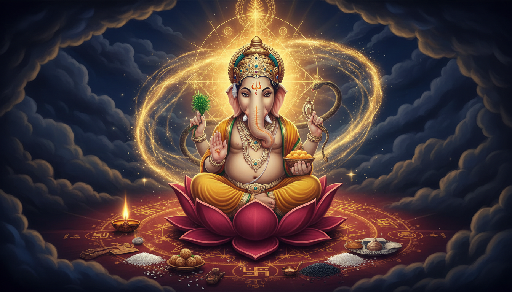

Before a new beginning becomes loud, it usually becomes quiet. A person decides to speak the truth, submit the application, repair the relationship, begin the treatment, or finally start the work they have been avoiding. At that exact moment, resistance often appears: doubt, distraction, delay, fear, a crowded mind, or an old pattern that seems to arrive before the opportunity.

This is why Ganesha is invoked first.
He is not worshipped first because the tradition wants a ceremonial formality. He is worshipped first because every meaningful beginning has to pass through a threshold, and Ganesha is the intelligence of thresholds. He is Vighneshvara, the lord of obstacles. He is also Vighnaharta, the remover of obstacles. These two names belong together. Ganesha does not make life artificially frictionless. He gives the clarity to see which obstruction is protection, which delay is guidance, and which fear must be cut away.
This story is a practical map for anyone facing repeated delay, Ketu affliction, confusion, sudden disruption, hidden fear, or the strange feeling that effort is disappearing into a fog.
1. The Story: The Door, The Head, And The Elephant
In the best-known account, Goddess Parvati prepares to bathe. She creates a boy from her own body and asks him to guard her chamber. He does not recognize Shiva when Shiva arrives. He blocks the door. The confrontation is swift and terrible. Shiva cuts off the boy's head.
Parvati's grief shakes creation. Shiva asks his attendants to bring the head of the first living being they find facing the opposite direction. They return with the head of an elephant. Shiva places it on the boy's body and restores him. The boy becomes Ganesha, the elephant-headed one, the first deity to be honored in ritual.
Read as superstition, the story remains shocking. Read as spiritual psychology, it is exact. A limited identity is removed. A larger intelligence is installed. The ego that says, "I will guard my boundary at any cost" is replaced by an intelligence that can listen deeply, remember vast patterns, break what must be broken, and remove what must be removed.
The elephant head is not a decoration. It is the new instrument of perception.
2. Why Ganesha Is Called First
The tradition places Ganesha at the beginning of rituals for at least three reasons.
First, he governs beginnings, thresholds, memory, numbers, language, and orderly intelligence. Second, he rules the hidden forces that can interfere with a beginning. Third, he teaches dharma at the moment of initiation: begin with clarity, clean intention, and humility.
This is why many astrological documents begin with Ganesha. Jyotish itself deals with karma, time, calculation, and unknown patterns. Ganesha is not inserted as a lucky charm. He is the presiding intelligence of the calculation itself.
In practical life, invoking Ganesha does not mean chanting and then refusing to plan. It means bringing your intention into a disciplined field before action:
- name one true obstacle,
- separate the obstacle from the story you tell about it,
- choose one action that is actually under your control,
- remove one unnecessary complication,
- and begin.
3. Ganesha And Ketu: The Headless Node, The Elephant Mind
In remedial astrology, Ganesha is especially associated with Ketu, the south node of the Moon. Ketu is headless in symbolic form: a serpent without its head. Ganesha's own story includes the loss of a head and its replacement by an elephant head. This is why Ganesha is often considered the presiding deity for Ketu.
The symbolism is subtle. Ketu can bring detachment, abrupt change, fear, intuition, psychic sensitivity, moksha-seeking, and a pull toward secret or occult knowledge. When afflicted, it can feel like a fog around identity: sudden losses, strange fears, compulsive research, spiritual confusion, isolation, or a sense of being pulled away from normal life.
Ganesha is the remedy because he does not ask you to suppress Ketu. He gives Ketu a wise head. He turns headless detachment into discernment. He turns sudden rupture into intelligent surrender. He turns scattered psychic impressions into grounded intuition.
Ketu Remedial Map
| Ketu pressure | How it may feel | Ganesha practice |
|---|---|---|
| First house | Identity confusion, detachment from body and name | Morning grounding, name one promise, one physical task before spiritual practice |
| Second house | Broken speech patterns, fear about resources | Speak one truthful sentence, eat warm food calmly, chant before important conversations |
| Fourth house | Emotional rootlessness, unstable home peace | Clean the entrance, keep one fixed meal and sleep time, visualize Muladhara as stable |
| Seventh house | Sudden distance or repetitive relationship patterns | Release blame, seek honest counsel, offer service before demanding connection |
| Eighth house | Fear, hidden enemies, occult fascination | Use protective mantra and qualified guidance; avoid fear-driven experiments |
| Tenth house | Career breaks, public visibility anxiety | Make one small professional action daily; offer Durva before new work cycles |
| Twelfth house | Disturbed sleep, ancestral dreams, scattered meditation | Sleep ritual, prayer, silence, charity, and steady breath before bed |
This table is not a substitute for chart reading. A Ketu placement that is difficult in one chart may be spiritually powerful in another. The remedy is not "remove Ketu." The remedy is to give Ketu's energy a conscious direction.
4. Muladhara Sadhana: Put Wisdom Under Your Feet
Ganesha is associated with Muladhara, the root support at the base of the spine. Muladhara is symbolically connected with the earth element, stability, safety, survival, and the first movement of Kundalini.
This matters in obstacle work. If your root feels unsafe, every challenge looks like an attack. If your body is exhausted, your nervous system treats ordinary effort as danger. If your home is chaotic, your mind produces chaos to match.
A simple Muladhara practice is enough for householders:
- Sit comfortably with the spine long.
- Feel the sitting bones and the base of the body.
- Imagine a deep red four-petaled lotus resting steadily at the root.
- Breathe in for four counts and out for six or eight counts.
- Mentally repeat Om Gam Ganapataye Namah for five to ten minutes.
- Before standing, say one small, practical action you will complete today.
This is not an escape into imagination. It is a rehearsal of stability. When the root is steady, the trunk of intelligence can lift the obstacle.
5. Ganapati Atharvashirsha: The Upanishadic Core
The Ganapati Atharvashirsha, also called the Ganapati Upanishad, presents Ganesha not merely as a remover of difficulties but as the visible form of Brahman. One of its central declarations is: "You are the visible Brahman." It further describes Ganesha as speech, consciousness, bliss, knowledge, and the eternal self.
This is important for modern spiritual practice. Ganesha is not being reduced to a wish-fulfilling mascot. He is a doorway into non-dual perception. Obstacles shrink when the mind no longer sees itself as isolated, helpless, and separate from the intelligence of life.
For a reader without initiation, the safest practice is:
- listen to a reliable recitation daily for a few minutes,
- read a small section with meaning,
- choose one line and let it repeat in the mind during work,
- and avoid treating the text as a mechanical force.
The same text says that study on Chaturthi, fasting, worship with Durva grass, and disciplined repetition are part of the tradition. These practices work together as concentration, gratitude, restraint, and action.
6. Rare Rituals And Lesser-Known Practices
These practices are simple, but their orientation is subtle. Do not use them to manipulate people or claim control over another person's will. Use them to clarify your own beginning.
Sankalpa At The Threshold
Before beginning anything important, stand at the entrance of your home or workspace for one minute. Name one obstacle, one required action, and one virtue you need. Then enter and begin.
Example: "May confusion around this work be removed. I will complete one page today. I need patience."
This small ritual converts a threshold from a place of hesitation into a place of remembrance.
Twenty-One Durva Offerings
Durva grass is especially beloved in Ganesha worship. On Wednesday, Chaturthi, or the morning of a new undertaking, wash a small number of Durva blades and offer them with water to Ganesha. A common count is 21 or 108. If you do not have fresh Durva, offer a clean green leaf or a simple flower.
Durva is tenacious grass. It grows again after being cut. Symbolically, it teaches resilience: the obstacle may cut the plan, but clarity can grow again.
Modaka As A Sweet Discipline
Modaka is not merely a sweet. It represents the reward that comes when scattered desire is folded into a disciplined shape. Offer a small sweet, fruit, or homemade item according to your health needs. Eat only a tiny portion as prasada. If you have diabetes or dietary restrictions, offer it to others or use a non-food symbol.
Ganapati Homam
A formal Ganapati Homam is best done under qualified guidance. At home, you may light a ghee lamp, offer water, Durva, flowers, and a grain such as rice or sesame, and recite Om Gam Ganapataye Namah 108 times. Fire here represents clarified intelligence. Offer the obstacle into the fire symbolically, then act on one practical step.
Threshold Clearing
Keep the entrance clean, well-lit, and free of broken objects. Draw a simple rice-flour line or fresh flower rangoli if that is part of your culture. The entrance represents the mind's first point of contact with the world. Cleaning it is not magic; it is training.
Ketu Compassion Remedy
Ketu is often pacified through humble service. Feed a stray dog, donate a blanket, offer sesame or grain, or serve an elderly person without seeking recognition. These acts soften the harsh edge of Ketu and remind the mind that spiritual power must remain humane.
Yantra And Kavacha
Ganapati Yantra and Kavacha practices can be powerful, but they belong to guided traditions. Do not buy a yantra out of fear or use it as a shortcut. Keep it clean, treat it respectfully, and seek a qualified teacher if you want deeper practice.
7. Ayurvedic Agni: The Body Must Be Able To Begin
Ayurveda says health begins with Agni, the digestive and metabolic fire. Agni is not only about food. It is the capacity to receive experience, extract nourishment, and eliminate what is not needed. When Agni is disturbed, decisions become unclear, emotions ferment, and obstacles feel larger than they are.
Ojas, the refined essence of vitality, depends on strong Agni. When Ojas is low, courage, patience, sleep, and immunity weaken together.
A practical Agni reset for a difficult period:
- wake and sleep at fixed times,
- sip warm water in the morning,
- eat warm, freshly cooked food at regular hours,
- include simple spices such as ginger, cumin, coriander, or fennel according to your constitution,
- avoid eating while angry, scrolling, or working,
- walk after meals,
- sleep before late-night rumination begins,
- and use herbs only after consulting a qualified Ayurvedic practitioner.
This is part of Ganesha practice. A stable body makes a stable threshold.
8. The Philosophy Of The Form
Ganesha's form is a teaching instrument.
The large ears say: listen more. The small mouth says: speak selectively. The trunk says: lift what is necessary and let go of what is not. The single tusk says: retain the essential and discard the nonessential. The large body says: contain power. The mouse says: even the smallest desire, if uncontrolled, can disturb the whole plan.
Ganesha rides the mouse rather than killing it. This is the mature approach to desire. It is not suppressed. It is disciplined and made useful.
The philosophy is therefore not "think positive and obstacles will vanish." It is: become large enough to understand the obstacle, subtle enough to listen, firm enough to begin, and humble enough to let grace finish what effort cannot.
9. The 41-Day Ganesha Obstacle Sadhana
Use this when you are beginning again after failure, handling a Ketu period, facing repeated delay, or preparing for an important transition.
Days 1 To 7: Name The Real Obstacle
- Write one obstacle in one sentence.
- Separate it into external facts and internal fears.
- Clean your entrance daily.
- Chant Om Gam Ganapataye Namah 27 times.
- Complete one small action before night.
Days 8 To 14: Steady The Root
- Fix your sleep and wake time.
- Eat one calm meal daily.
- Practice Muladhara breathing for five minutes.
- Remove one broken or unused object from the workspace.
- Speak honestly to one supportive person.
Days 15 To 21: Offer Durva And Truth
- Offer Durva, a leaf, or a flower on Wednesday.
- Recite or listen to Ganapati Atharvashirsha for a few minutes.
- Name one fear in writing.
- Take one action that gently disproves that fear.
- Donate food or service.
Days 22 To 30: Align With Time
- Observe Chaturthi if your health permits.
- Light a lamp in the morning or evening.
- Chant 108 times before starting work.
- Break the main obstacle into seven smaller tasks.
- Complete at least one task daily.
Days 31 To 40: Turn Ritual Into Work
- Send the email, submit the form, make the call, or finish the file.
- Avoid new complications.
- Continue the daily mantra.
- Review what changed in body, speech, and mind.
- Help another person begin something.
Day 41: Completion
Offer water and Durva, thank Ganesha in your own words, and write one sentence: "I begin with clarity, and I release what is not mine to control."
10. Conclusion: The Obstacle Becomes A Door
Ganesha achieved victory over obstacles not by denying difficulty, but by changing the instrument that meets difficulty. The old identity was replaced by a larger intelligence. The headless force of Ketu was given discernment. The root was stabilized. Fire was clarified. Desire was disciplined. Action was purified.
If you are facing delay today, do not only ask for the block to disappear. Ask for the right beginning, the right perception, and the right first step. Clean the threshold, steady the body, invoke the name, offer something small, and then act.
That is how obstacles become doors.
Sources
- Ganesha, Lord of Obstacles - LACMA Collections
- Sri Ganesha in Vedic Astrology - American Institute of Vedic Studies
- Shri Ganapati Atharvashirsha with translation - Sanskrit Documents
- Durva Ganapati Chaturthi Vrat - Drik Panchang
- Physiological aspects of Agni - PubMed Central
- Ayurvedic Nutrition: Food as Medicine - National Ayurvedic Medical Association